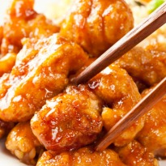

Chinese cuisine includes styles originating from the diverse regions of China, as well as from Chinese people in other parts of the world including most Asian nations. Over time, techniques and ingredients from the cuisines of other cultures were integrated into the cuisine of the Chinese people due both to imperial expansion and from the trade with nearby regions in pre-modern times, and from Europe and the New World in the modern period.
HistoryChinese society greatly valued gastronomy and developed an extensive study of the subject based on its traditional medical beliefs. Chinese culture initially centered around the North China Plain. The first domesticated crops seem to have been the foxtail and broomcorn varieties of millet, while rice was cultivated in the south. By 2000 BC, wheat had arrived from western Asia. However, these grains were typically served as warm noodle soups instead of baked into bread as in Europe. Nobles hunted various wild game and consumed mutton, pork, dog, and beef as these animals were domesticated. Grain was stored against famine and flood and meat was preserved with salt, vinegar, curing, and fermenting. The flavor of the meat was enhanced by cooking it in animal fats though this practice was mostly restricted to the wealthy.[4] By the time of Confucius in the late Zhou, gastronomy was becoming a high art. He was recorded discussing one such picky eater: "For him, the rice could never be white enough. When it was not cooked right, he would not eat. When it was out of season, he would not eat. When the meat was not cut properly, he would not eat. When the food was not prepared with the right sauce, he would not eat."[citation needed] During Shi Huangdi's Qin dynasty, the empire expanded into the south. By the time of the Han Dynasty, the different regions and cuisines of China's peoples were linked by major canals and leading to greater complexity in the different regional cuisines. Not only is food seen as giving "qi", energy, but food is also about maintaining yin and yang.[5] The philosophy behind it was rooted in the I Ching and Chinese traditional medicine: food was judged for color, aroma, taste, and texture and a good meal was expected to balance the Four Natures ('hot', warm, cool, and 'cold') and the Five Tastes (pungent, sweet, sour, bitter, and salty). Salt was used as a preservative from early times, but in cooking was added in the form of soy sauce, and not at the table. The predominance of chopsticks and spoons as eating utensils also necessitated that most food be prepared in bite-sized pieces or (as with fish) be so tender that it could be easily picked apart. By the Later Han period (2nd century), writers frequently complained of lazy aristocrats who did nothing but sit around all day eating smoked meats and roasts. During the Han dynasty, Chinese developed methods of food preservation for military rations during campaigns such as drying meat into jerky and cooking, roasting, and drying grain. Chinese legends claim that the roasted, flat bread shaobing was brought back from the Xiyu (the Western Regions, a name for Central Asia) by the Han dynasty General Ban Chao, and that it was originally known as hubing (??, lit. "barbarian pastry"). The shaobing is believed to be descended from the hubing.[8] Shaobing is believed to be related to the Persian and Central Asian naan and the Near Eastern pita.Foreign westerners made and sold sesame cakes in China during the Tang dynasty. During the Southern and Northern Dynasties non-Han people like the Xianbei of Northern Wei introduced their cuisine to northern China, and these influences continued up to the Tang dynasty, popularizing meat like mutton and dairy products like goat milk, yogurts, and Kumis among even Han people. It was during the Song dynasty that Han Chinese developed an aversion to dairy products and abandoned the dairy foods introduced earlier.[14] The Han Chinese rebel Wang Su who received asylum in the Xianbei Northern Wei after fleeing from Southern Qi, at first could not stand eating dairy products like goat's milk and meat like mutton and had to consume tea and fish instead, but after a few years he was able to eat yogurt and lamb, and the Xianbei Emperor asked him which of the foods of China (Zhongguo) he preferred, fish vs mutton and tea vs yogurt.[15][16][17][18] The great migration of Chinese people south during the invasions preceding and during the Song dynasty increased the relative importance of southern Chinese staples such as rice and congee. The Yuan and Qing dynasties introduced Mongolian and Manchu cuisine, warm northern dishes which popularized hot pot cooking. During the Yuan dynasty many Muslim communities emerged in China, who practiced a porkless cuisine now preserved by Hui restaurants throughout the country.[citation needed] Yunnan cuisine is unique in China for its cheeses like Rubing and Rushan cheese made by the Bai people, and its yogurt, the yogurt may have been due to a combination of Mongolian influence during the Yuan dynasty, the Central Asian settlement in Yunnan, and the proximity and influence of India and Tibet on Yunnan.[19] As part of the last leg of the Columbian Exchange, Spanish and Portuguese traders began introducing foods from the New World to China through the port cities of Canton and Macao. Mexican chili peppers became essential ingredients in Sichuan cuisine and calorically-dense potatoes and corn became staple foods across the northern plains. During the Qing Dynasty, Chinese gastronomes such as Yuan Mei focused upon a primary goal of extracting the maximum flavor of each ingredient. However, as noted in his culinary work the Suiyuan shidan, the fashions of cuisine at the time were quite varied and in some cases were flamboyantly ostentatious,[20] especially when the disply served also a formal ceremonial purpose, as in the case of the Manchu Han Imperial Feast.[21]
TypesThe 8 Great Regional Cuisines of China
Sweet Cantonese Food
Cantonese food is the most popular style internationally. Guangdong Province and Hong Kong are noted for fine seafood dishes and rice dishes. They eat a very wide variety of foods. The dishes they serve don't have strong flavors since it is lightly seasoned, and they often tend to be a little sweet.
Sichuan Province produced the most widely served cuisine in China. Their dishes are famous for their hot-spicy taste and the numbing flavor of Sichuan peppercorn that is rare in other regional cuisines. It is the food of Chengdu and Chongqing (which used to be part of Sichuan).
Shandong was one of the first civilized areas, and it set the pattern for northern styles of cooking. With a long coast, seafood is its forte. They preserve the original taste of the seafood by using simple ingredients and braising, and they like vinegar and salt. Unlike southern cuisines, they serve much more wheat food, including their noodles.
Jiangsu Province and China's biggest city, Shanghai, have a very refined gourmet cuisine that is often served at government banquets. What makes it special is the exquisite cooking techniques that produce richly aromatic and visually artistic dishes. Their chefs also focus on serving meals that promote health.
Fujian Province is known for great seafood and soups and the precise use of scintillating but not tongue numbing spices. Adding much wild exotic delicacies from the sea and mountains makes their dishes have unusual flavors. It is like a culinary wild adventure.
Zhejiang Province is the province south of Jiangsu, and it borders on Shanghai too, so their style is similar to theirs, but it is less elaborately prepared. They focus more on serving fresh food. The food is often served raw or almost raw and is fresh and crispy and seasonal. It is more like Japanese food. Ningbo cuisine is very salty.
If you like Sichuan food, you'll probably like Hunan food too since it is even hotter. It is tastier and more delicious because they don't use peppercorn that numbs the mouth. It is a rich agricultural area that produces a broad range of vegetables and herbs, and these are served up.
Anhui cuisine is even wilder than Fujian cuisine. It is inland, and big mountains such as the Yellow Mountains are the source of lots of different wild foods and herbs. It is basically a hearty mountain peasant food. Some of the best dishes incorporate wild food for an unusual taste.
Recipes
CHICKEN MANCHURIAN

PANEER IN A LEMON HONEY SAUCE